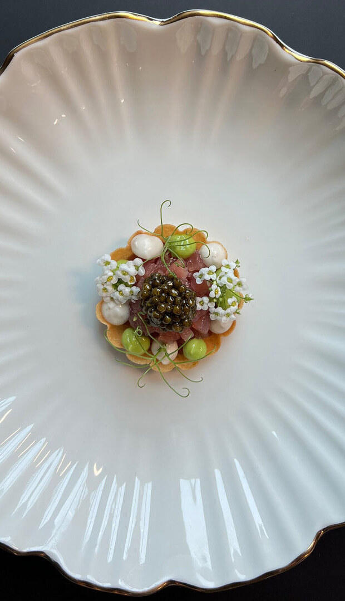
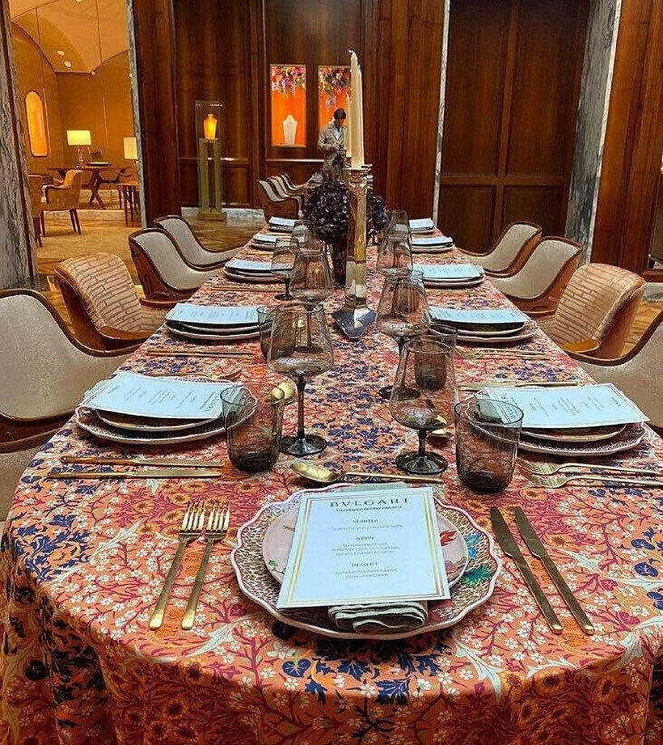
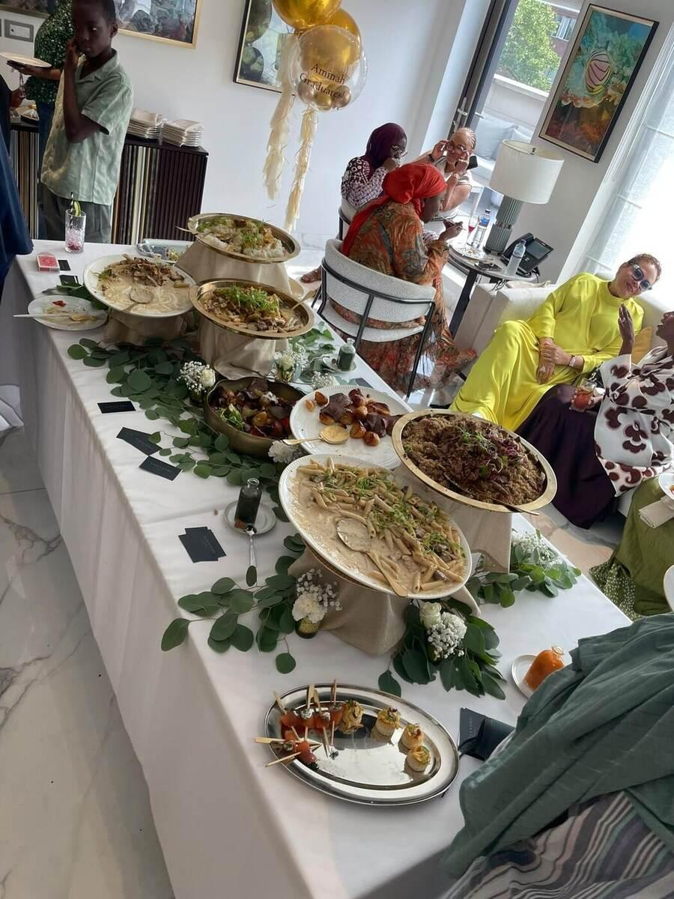

ALEJANDRO NICOLAUPrivate Chef — London
ALEJANDRO NICOLAUPrivate Chef — London
From a private Mediterranean voyage to a corporate reception in London. Alejandro and his team travel wherever the table is set.

Alejandro joins the crew as an exclusive chef for short charters or full seasons, managing daily menus around ports of call, local catches and guest preferences.
Recent experience: two weeks aboard a 40-metre yacht in St Tropez, serving relaxed meals on deck and formal gala dinners under the stars.
Check availability
As a resident chef for UHNW families across London, France and Greece, Alejandro designs daily menus tailored to dietary requirements, entertains visiting guests, and maintains the highest standard of discretion.
Experience includes managing kosher-style cooking for a British Jewish family, with particular care for tradition and consistency.
Check availability
Luxury-hotel-level table settings, multi-course menus and full service coordination for clients including Bulgari and their best customers.
Every gala dinner is planned down to the last detail: tableware, pace of service, pairing, and the visual presentation of each dish.
Check availability
With experience working between London, France and Greece, Alejandro travels with his own team and protocol, adapting purchasing and kitchen logistics to the particularities of each country.
Ideal for destination weddings, family celebrations at a second home, or multi-day events.
Check availabilityReceptions, business lunches and company dinners with the same standard as a Michelin-starred restaurant — without leaving the office or hotel.
Intimate five- to nine-course experiences, designed for special celebrations, anniversaries or signature dinners at home.
Hands-on sessions for small groups, families or teams, with a final tasting included.
Tell us the occasion, location, guest count and preferences.
Alejandro designs a bespoke menu, with options and pricing.
Date, sourcing logistics and required team are confirmed.
Flawless, discreet service worthy of the setting.